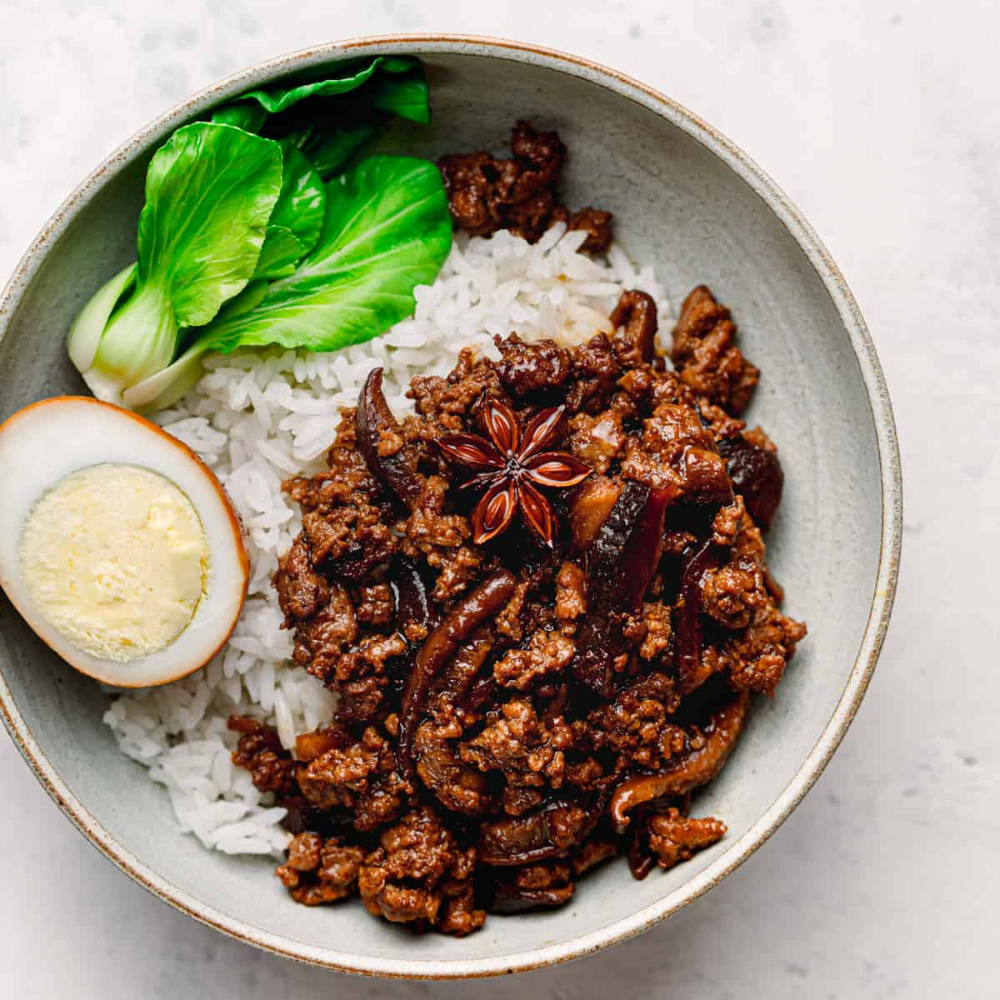

Lu Rou Fan (Taiwanese Braised Pork)

Description
This Taiwanese minced pork is probably one of the easiest Taiwanese recipes you can make at home. It uses simple ingredients available in your pantry. This version of Lu Rou Fan is made of ground pork instead of pork belly. Ground pork cooks faster than pork belly. It's the perfect protein choice for fast and flavorful weeknight dinners.
Ingredients
- 1 lb minced pork or ground pork (best with pork belly)
- 1 cup sliced shallots
- 1¼ cup neutral oil
- 7 dried shiitake mushrooms (rinse, soak in warm water for 20 minutes, drain, slice, and reserve liquid)
- 2 cups water
- ¼ cup dried shittake mushroom liquid
- ¼ cup Shaoxing wine or dry sherry
- ¼ cup light soy sauce
- 2 tablespoons dark soy sauce
- 1 tablespoon minced garlic
- 2 star anise
- 2 bay leaves
- 1 tablespoon minced ginger
- 2 tablespoons brown sugar
- 1 teaspoon Chinese five-spice powder
Optional:
- 6 soft or hard boiled eggs
- salt and white pepper powder to taste
Directions
- Heat oil in a pan. Cook shallots over medium heat, stirring often for 8 minutes or until shallots are golden brown. Set aside. Reserve 3 tablespoons of oil to cook pork.
- Heat oil over high heat. Cook pork until brown. Add sliced mushrooms, garlic, ginger and stir for 1-2 minutes. Add sugar, bay leaves, star anise, light soy sauce, dark soy sauce, Shaoxing wine, five-spice powder, and fried shallots. Stir for about 1-2 minutes.
- Add water and reserved mushroom liquid. Bring to a boil then lower the heat to a low heat. Simmer, uncovered for about 30 minutes or until a desired taste and consistency is reached. Stirring occasionally and adjust seasoning if necessary. Serve with rice or noodles.
Source: https://poshjournal.com/lu-rou-fan#recipe
Back to Home